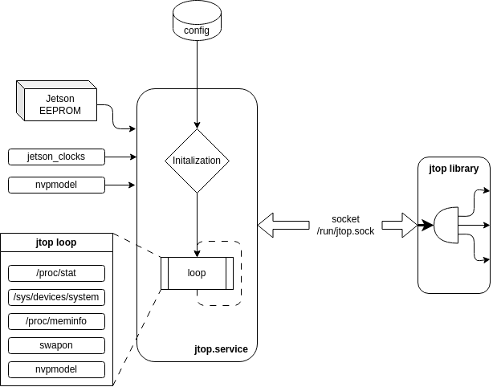

How is it works¶
jtop is a power monitor that uses a service and a Python client library.
Like the image above, when jtop service start, load and decode the information on your board.
Initialization¶
Read NVIDIA Jetson EEPROM to detect which NVIDIA Jetson is running
decode jetson_clocks to know if is running and which engines are involved when it starts.
decode the NVPmodel to know which model is selected
Open the
/run/jtop.socksocket and wait for a jtop client connection
Loop¶
When jtop is running read all status from your current board and share all this data to all jtop python connections.
Read and estimate the CPU utilization from
/proc/statRead status from all devices in
/sys/devices/systemRead and decode memory status from
/proc/meminfoDecode and read the status from all swaps using
swaponcommandCheck status from jetson_clocks
Check which nvpmodel is running
jtop.sock¶
jtop uses a service to share the data between client (jtop gui or your Python script) and a server.
This service, called jtop.service use a socket file. It is located in:
This socket is protected by access mode: 660 equivalent to srw-rw---- and by the group.
Only other users in jtop group have access to this socket